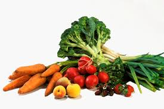

Because our bodies need a lot of protein to maintain our daily lives, a large amount of meat can help us get such a large amount of protein, but even the highest quality vegetarian diet cannot obtain such a large amount of protein. And if people don't consume enough protein every day, they will feel very weak after performing a certain level of activity. So carnivorism can help people get more protein and keep them energetic for all activities throughout the day. And according to research, vegetarians are more physically active, drink less alcohol, and weigh less. But despite this, they are more impaired by illness and more likely to suffer from anxiety/depression and chronic illness. So carnivores are healthier than vegetarians.
Compared with carnivores, vegetarians can obtain more vitamins from daily food, which is equally important to people. It maintains people's physical needs and health and helps people reduce the possibility of getting sick. And according to research, vegetarians tend to have lower body mass indexes, lower overall cancer rates, and lower risks of chronic disease.
I don't think there is a good or bad thing about being a meat-eater or a vegetarian, people should choose the type of food according to their own needs. I think the best diet structure should be a reasonable combination of vegetables, fruits and meat, so that people can not only get enough protein to sustain the energy needed for a day, but also get vitamins and other trace substances to keep the body healthy and reduce the chance of some diseases. But if you want to be a certain kind of person, then I suggest you choose according to your physical condition because some people's bodies cannot adapt to pure meat eating or some people's bodies cannot adapt to pure vegetarian food. Therefore, people should choose the food they need according to their physical condition.
I cannot imagine not enjoying a juicy beef tenderloin steak.